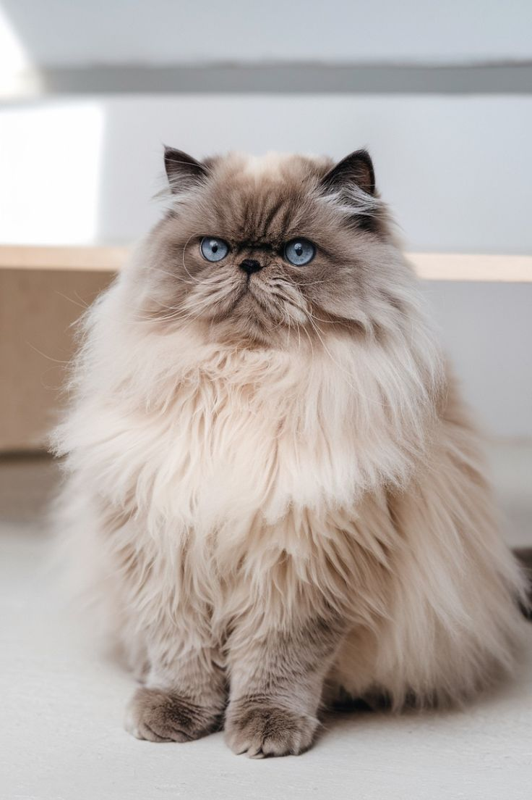
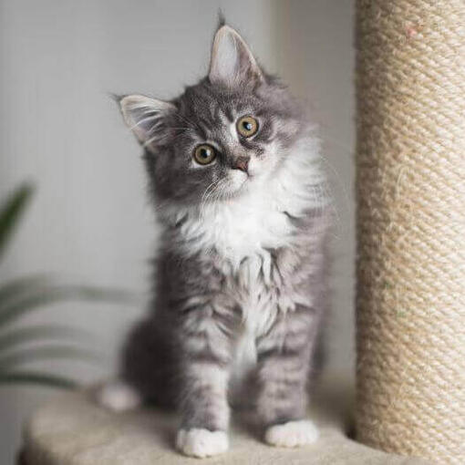
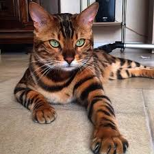

Gato Persa

El Persa es conocido por su pelaje largo y exuberante, su cara plana y su temperamento tranquilo. Son gatos ideales para personas que disfrutan del cuidado y la atención. Requieren cepillado diario para mantener su belleza.
Descubre las diferentes razas felinas y sus características únicas
Los gatos son animales fascinantes con una gran variedad de razas, cada una con características propias. Desde el elegante Siamés hasta el imponente Maine Coon, descubre qué raza se adapta mejor a tu estilo de vida.

El Persa es conocido por su pelaje largo y exuberante, su cara plana y su temperamento tranquilo. Son gatos ideales para personas que disfrutan del cuidado y la atención. Requieren cepillado diario para mantener su belleza.

El Siamés es un gato elegante y vocal, conocido por sus ojos azules penetrantes y su coloración de puntos (cara, orejas, patas y cola más oscuras). Son muy sociables, inteligentes y demandan mucha interacción con sus dueños.

Una de las razas más grandes, el Maine Coon es un gato imponente pero afectuoso. Con un peso que puede alcanzar los 11 kg, estos gatos son gigantes amables que disfrutan de la compañía humana y son excelentes cazadores.

El Bengalí es resultado del cruce entre gatos domésticos y el gato Leopardo asiático. Poseen un hermoso pelaje manchado o moteado que asemeja al de un leopardo miniatura. Son activos, juguetones y requieren mucho ejercicio.
Independientemente de la raza, todos los gatos comparten características fascinantes como su capacidad de ver en la oscuridad, su flexibilidad excepcional, sus afiladas garras retráctiles y su increíble sentido del equilibrio.
Los gatos son depredadores naturales, ágiles y poseen un instinto cazador muy desarrollado. Además, son animales muy limpios que dedican gran parte de su día al aseo personal.
Si tienes preguntas sobre razas de gatos o necesitas recomendaciones para elegir tu felino ideal, no dudes en contactarnos. Estamos aquí para ayudarte a encontrar el compañero felino perfecto.
Email: info@razasdegatos.com
Teléfono: +34 123 456 789